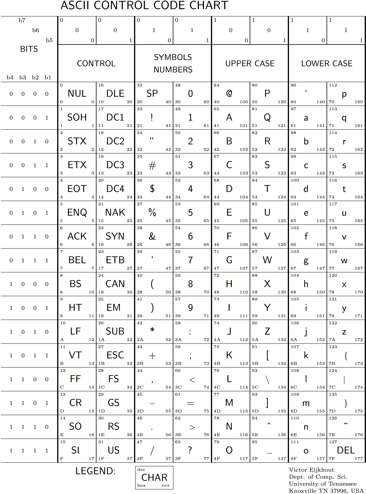
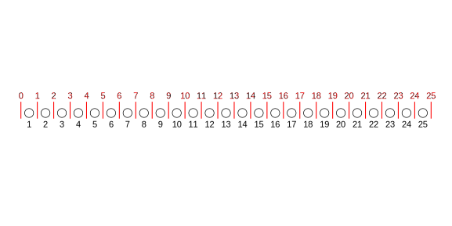

9 Bioinformatic file formats
Almost all the high-throughput sequencing data you will deal with should arrive in just a few different formats. There are some specialized formats (like those output by the program TASSEL, etc.) but we will largely ignore those, focusing instead on the formats used in production by the 1000 genomes and 10K vertebrate genomes projects. In a sentence, the most important are: FASTA, FASTQ, SAM, BAM, and VCF.
Plan: Go over these, and for each, pay special attention to compressed and indexed forms and explain why that is so important. I think that we should probably talk about the programs that are available for manipulating each of these, as well, but I won’t add that until we all have access to an HPC or other proper Unix environment.
I was originally going to do tools for manipulating files in the different formats, but I will do that in a separate chapter(s) later.
9.1 Sequences
9.2 FASTQ
The FASTQ format is the standard format for lightly-processed data coming off an Illumina machine. If you are doing whole genome sequencing, it is typical for the Illumina processing pipeline to have separated all the reads with different barcodes into different, separate files. Typically this means that all the reads from one library prep for one sample will be in a single file. The barcodes and any associated additional adapter sequence is typically also removed from the reads. If you are processing RAD data, the reads may not be separated by barcode, because, due to the vagaries of the RAD library prep, the barcodes might appear on different ends of some reads than expected.
A typical file extension for FASTQ files is .fq. Almost all FASTQ files you get from a sequencer should be gzipped to save space. Thus, in order to view the file you will have to uncompress it. Since you would, in most circumstances, want to visually inspect just a few lines, it is best to do that with gzcat and pipe the output to head.
As we have seen, paired-end sequencing produces two separate reads of a DNA fragment. Those two different reads are usually stored in two separate files named in such a manner as to transparently denote whether it contains sequences obtained from read 1 or read 2. For example bird_08_B03_R1.fq.gz and bird_08_B03_R2.fq.gz. Read 1 and Read 2 from a paired read must occupy the sames lines in their respective files, i.e., lines 10001-10004 in bird_08_B03_R1.fq.gz and lines 10001-10004 in bird_08_B03_R2.fq.gz should both pertain to the same DNA fragment that was sequenced. That is what is meant by “paired-end” sequencing: the sequences come in pairs from different ends of the same fragment.
The FASTQ format is very simple: information about each read occupies just four lines. This means that the number of lines in a proper FASTQ file must always be a multiple of four. Briefly, the four lines of information about each read are always in the same order as follows:
- An Identifier line
- The DNA sequence as A’s, C’s, G’s and T’s.
- A line that is almost always simply a
+sign, but can optionally be followed by a repeat of the ID line. - An ASCII-encoded, Phred-scaled base quality score. This gives an estimated measure of certainty about each base call in the sequence.
The code block below shows three reads worth (twelve lines) of information from a FASTQ file. Take a moment to identify the four different lines for each read.
@K00364:64:HTYYCBBXX:1:1108:4635:14133/1
TAGAATACGCCAGGTGTAAGAATAGTAGAATACGCCAGGTGTAAGAATAGTAGAACACGCCAGGTGTAAGAATAGTAGAA
+
AAAFFJJJJJFFJFJJJFJJFFJFJFJJJJJJJJFFJJJFJJJFJJAJJFJJFJJFJJJ7JJJF-<JAFJJ<F<AJAJJF
@K00364:64:HTYYCBBXX:1:1108:5081:25527/1
AAAACACCAAAAGAAAGATGCCCAGGGTCCCTGCTCATCTGCGTGAAAGTGACTTAGGCATGCTGCAAGGAGGCATGAGG
+
AAFFFJJJJJJJJJJJJJJJJJJJJJJJJJJJJJJJJJJJJJJJJJJJJJJJJJJJJJJJJJJJJJJJJJJJJJJJJJJJ
@K00364:64:HTYYCBBXX:1:1108:5852:47295/1
AGGTGGCTCTAGAAGGTTCTCGGACCGAGAAACAGCCTCGTACATTTGCAATGATTTCAATTCATTTTGACCATTACGAA
+
AAFFFJJJJJJJJJJJJJJJJJJJJJJJJJJJJJJJJJJJJJJJJJJJJJJJJJJJJJJJJJJJJJJJJJJJJJJJJJJJLines 2 and 3 are self-explanatory, but we will expound upon lines 1 and 4 below.
9.2.1 Line 1: Illumina identifier lines
The identifier line can be just about any string that starts with an @, but, from Illumina data you might see something like this:
@K00364:64:HTYYCBBXX:1:1108:4635:14133/1The colons (and the /) are field separators. The separate parts of the line above are interpreted something along the lines as follows (keeping in mind that Illumina occasionally changes the format and that there may be additional optional fields):
@ : mandatory character that starts the ID line
K00364 : Unique sequencing machine ID
64 : Run number on instrument
HTYYCBBXX : Unique flow cell identifier
1 : Lane number
1108 : Tile number (section of the lane)
4635 : x-coordinate of the cluster within the tile
14133 : y-coordinate of the cluster within the tile
1 : Whether the sequence is from read 1 or read 2 For Illumina data processed with versions 1.8+ of Casava, the identifier lines are a little different, like this:
@A00600:191:HY75HDSX2:1:2624:27480:35744 2:N:0:AAGACCGT+CAATCGACin which we have:
@ : mandatory character that starts the ID line
A00600 : Unique sequencing machine ID
191 : Run number on instrument
HY75HDSX2 : Unique flow cell identifier
1 : Lane number
2624 : Tile number (section of the lane)
27480 : x-coordinate of the cluster within the tile
35744 : y-coordinate of the cluster within the tile
2 : Whether the sequence is from read 1 or read 2
N : N if the sequence was not flagged as crappy by the maching, Y otherwise
0 : 0 when no control bits are turned on
AAGACCGT+CAATCGAC : Index/barcode of the sampleQuestion: For paired reads, do you expect the x- and y-coordinates for read 1 and read 2 to be the same?
9.2.2 Line 4: Base quality scores
The base quality scores give an estimate of the probability that the base call is incorrect. This comes from data the sequencer collects on the brightness and compactness of the cluster radiance, other factors, and Illumina’s own models for base call accuracy. If we let \(p\) be the probability that a base is called incorrectly, then \(Q\), the Phred-scaled base quality score, is:
\[ Q = \lfloor-10\log_{10}p\rfloor, \] where \(\lfloor x \rfloor\) means “the largest integer smaller than \(x\).
To get the estimate of the probability that the base is called incorrectly from the Phred scaled score, you invert the above equation:
\[ p = \frac{1}{10^{Q/10}} \] Base quality scores from Illumina range from 0 to 40. The easiest values to use as guideposts are \(Q = 0, 10, 20, 30, 40\), which correspond to error probabilites of 1, 1 in 10, 1 in 100, 1 in 1,000, and 1 in 10,000, respectively.
All this is fine and well, but when we look at the quality score line above we see something like 7JJJF-<JAFJJ<F<AJAJJF. What gives? Well, from a file storage and parsing perspective, it makes sense to only use a single character to store the quality score for every base. So, that is what has been done: each of those single characters represents a quality score—a number between 0 and 40, inclusive.
The values that have been used are the decimal representations of ASCII text characters minus 33.
The decimal representation or each character can be found in Figure 9.1.
The decimal representation is in the upper left of each character’s rectangle.
Find the characters corresponding to base quality scores of 0, 10, 20, 30, and 40. Remember that the base quality score is the character’s decimal representation minus 33.
Here is another question: why do you think the scale starts with ASCII character 33?
9.3 FASTA
The FASTQ format, described above, is tailored for representing short DNA sequences—and their associated quality scores—that have been generated from high-throughput sequencing machines. A simpler, leaner format is used to represent longer DNA sequences that have typically been established from a lot of sequencing, and which no longer travel with their quality scores. This is the FASTA format, which you will typically see storing the DNA sequence from reference genomes. FASTA files typically use the file extensions .fa, .fasta, or .fna, the latter denoting it as a FASTA file of nucleotides.
In an ideal world, a reference genome would contain a single, uninterrupted sequence of DNA for every chromosome. While the resources for some well-studied species include “chromosomal-level assemblies” which have much sequence organized into chromosomes in a FASTA file, even these genome assemblies often include a large number of short fragments of sequence that are known to belong to the species, but whose location and orientation in the genome remain unknown.
More often, in conservation genetics, the reference genome for an organism you are working on might be the product of a recent, small-scale, assembly of a low-coverage genome. In this case, the genome may be represented by thousands, or tens of thousands, of scaffolds, only a few of which might be longer than one or a few megabases. All of these scaffolds go into the FASTA file of the reference genome.
Here are the first 10 lines of the FASTA holding a reference genome for Chinook salmon:
>CM008994.1 Oncorhynchus tshawytscha isolate JC-2011-M1
AGTGTAGTAGTATCTTACCTATATAGGGGACAGTGTAGTAGTATCTTACTTATTTGGGGGACAATGCTCTAGTGTAGTAG
AATCTTACCTTTATAGGGGACAGTGCTGGAGTGCACTGGTATCTTACCTATATAGGGGACAGTGCTGGAGTGTAGTAGTG
TCTCGGCCCACAGCCGGCAGGCCTCAGTCTTAGTTAGACTCTCCACTCCATAAGAAAGCTGGTACTCCATCTTGGACAGG
ACATAGACAGGGACCACCTGCAGGACACACACGCAGGTTTACTAAGGGTTTACTCAACACAGTGAACAGCATATACCAGA
TGTGTGGTACATGTTTACAGAGAAGGAGtatattaaaaacagaaaactgTTTTGGttgaaatatttgtttttgtctgaAG
CCCGAAAAACACATGAAATTCAAAAGATAATTTGACCTACGCACTAACTAGGCTTTTCAGCAGCTCAACTACTGTCCGTT
TATTGATCTACTGTACTGCAACAACATATGTACTCACACAACAGACTATATTGGATTCAGACAGGACCTATAGGTTACCA
TGCTTCCTCTCTACAGGACCTATAGGTTACCATGCTTCCTCTCTACAAGGTCTATAGGTTACCATGCGTCCTCTCTACAG
GACCTATAGGTTACCATGCTTCCTCTCTACAGGGCCTATAGGTTACCATGCTTCCTCTCTACAGGACCTGTAGGTTACCAThe format is straightforward: any line starting with > is interpreted as a line holding the identifier of the following sequence. In this case, the identifier is CM008994.1. The remainder of the line (following the first white space) are further comments about the sequence, but will not typically be carried through downstream analysis (such as aligment) pipelines. In this case CM008994.1 is the name of an assembled chromosome in this reference genome. The remaining lines give the DNA sequence of that assembled chromosome.
It is convention with FASTA files that lines of DNA sequence should be less than 80 characters, but this is inconsistently enforced by different analysis programs. However, most of the FASTA files you will see will have lines that are 80 characters long.
In the above fragment, we see DNA sequence that is either upper or lower case. A common convention is that the lowercase bases are segments of DNA that have been inferred (by, for example RepeatMasker) to include repetitive DNA. It is worth noting this if you are trying to design assays from sequence data! However, not all reference genomes have repeat-sequences denoted in this fashion.
Most reference genomes contain gaps. Sometimes the length of these gaps can be accurately known, in which case each missing base pair is replaced by an N. Sometimes gaps of unknown length are represented by a string of N’s of some fixed length (like 100).
Finally, it is worth reiterating that the sequence in a reference-genome FASTA file represents the sequence only one strand of a double-stranded molecule. In chromosomal-scale assemblies there is a convention to use the strand that has its 5’ end at the telomere of the short arm of the chromosome [@cartwrightMultiplePersonalitiesWatson2011]. Obviously, such a convention cannot be enforced in a low-coverage genome in thousands of pieces. In such a genome, different scaffolds will represent sequence on different strands; however the sequence in the FASTA file, whichever strand it is upon, is taken to be the reference, and that sequence is referred to as the forward strand of the reference genome.
9.3.1 Genomic ranges
Almost every aspect of genomics or bioinformatics involves talking about the “address” or “location” of a piece of DNA in the reference genome. These locations within a reference genome can almost universally be described in terms of a “genomic range” with a format that looks like:
SegmentName:start-stopFor example,
CM008994.1:1000001-1001000denotes the 1 Kb chunk of DNA starting from position 1000001 and proceeding to (and including!) position 1001000. Such nomenclature is often referred to as the genomic coordinates of a segment.
In most applications we will encounter, the first position in a chromosome is labeled 1. This is called a base 1 coordinate system. In some genomic applications, a base 0 coordinate system is employed; however, for the most part such a system is only employed internally in the guts of code of software that we will use, while the user interface of the software consistently uses a base 1 coordinate system.
Sometimes you will have to convert between base 0 and base1 coordinate systems. Thinking about how to do this is easy if you keep a simple picture in your head—I like to think of it as, the base-1 coordinate system counts “beads” that are the actual base pairs, while the base-0 system counts “fences” that separate the beads. In the following picture, the fences and their corresponding numbers are red, while the beads and their corresponding numbers are black.

From this picture, it is pretty clear that if you have a base-1 range from \(x\) to \(y\) (with \(x \leq y\)), then you could refer to that by the base-0 range from \(x-1\) to \(y\) (those are the “fences” that contain the beads). Likewise, if you have a base-0 range from \(v\) to \(w\) (with \(v<w\)), then the corresponding base-1 range would be from \(v+1\) to \(w\), as those are the beads that are contained by the fences at \(v\) and \(w\).
9.3.2 Extracting genomic ranges from a FASTA file
Commonly (for example, when designing primers for assays) it is necessary to pick out a precise genomic range from a reference genome. This is something that you should never try to do by hand. That is too slow and too error prone. Rather the software package samtools (which will be discussed in detail later) provides the faidx utility to index a FASTA file. It then uses that index to provide lightning fast access to specific genomic coordinates, returning them in a new FASTA file with identifiers giving the genomic ranges. Here is an example using samtools faidx to extract four DNA sequences of length 150 from within the Chinook salmon genome excerpted above:
# assume the working directory is where the fasta file resides
# create the index
samtools faidx GCA_002831465.1_CHI06_genomic.fna
# that created the file: GCA_002831465.1_CHI06_genomic.fna.fai
# which holds four columns that constitute the index
# now we extract the four sequences:
samtools faidx \
GCA_002831465.1_CHI06_genomic.fna \
CM009007.1:3913989-3914138 \
CM009011.1:2392339-2392488 \
CM009013.1:11855194-11855343 \
CM009019.1:1760297-1760446
# the output is like so:
>CM009007.1:3913989-3914138
TTACCGAtggaacattttgaaaaacacaaCAATAAAGCCTTGTGTCCTATTGTTTGTATT
TGCTTCGTGCTGTTAATGGTAgttgcacttgattcagcagccgtAGCGCCGGGAAggcag
tgttcccattttgaaaaaTGTCATGTCTGA
>CM009011.1:2392339-2392488
gatgcctctagcactgaggatgccttagaccgctgtgccactcgggaggccttcaGCCTA
ACTCTAACTGTAAGTAAATTGTGTGTATTTTTGGGTACATTTCGCTGGTCCCCACAAGGG
GAAAGggctattttaggtttagggttaagg
>CM009013.1:11855194-11855343
TGAGGTTTCTGACTTCATTTTCATTCACAGCAGTTACTGTATGCCTCGGTCAAATTGAAA
GGAAAGTAAAGTAACCATGTGGAGCTGtatggtgtactgtactgtactgtattgtactgt
attgtgtgGGACGTGAGGCAGGTCCAGATA
>CM009019.1:1760297-1760446
ttcccagaatctctatgttaaccaaggtgtttgcaaatgtaacatcagtaggggagagag
aggaaataaagggggaagaggtatttatgactgtcataaacctacccctcaggccaacgt
catgacactcccgttaatcacacagactGG9.3.3 Downloading reference genomes from NCBI
I might want to write blurb here about how much nicer I find it is to use the ftp link: http://ftp.ncbi.nlm.nih.gov/genomes/genbank/ to find genomes on Genbank. Although now that the number of genomes is growing so quickly, it can take quite a while for the pages to load. But I still find it easier to navigate to exactly the files I want using this system than the actual user interface that they have.
9.4 Alignments
A major task in bioinformatics is aligning reads from a sequencing machine to a reference genome. We will discuss the operational features of that task in a later chapter, but here we treat the topic of the SAM, or Sequence Alignment Map, file format which is widely used to represent the results of sequence alignment. We attempt to motivate this topic by first considering a handful of the intricacies that arise during sequence alignment, before proceeding to a discussion of the various parts of the SAM file that are employed to handle the many and complex ways in which DNA alignments can occur and be represented. This will necessarily be an incomplete and relatively humane introduction to SAM files. For the adventurous a more complete—albeit astonishingly terse—description of the SAM format specification is maintained and regularly updated.
9.4.1 How might I align to thee? Let me count the ways…
We are going to consider the alignment of very short (10 bp) paired-end reads from the ends of a short (50 bp) fragment from the fourth line of the FASTA file printed above. In other words, those 80 bp of the reference genome are:
5' ACATAGACAGGGACCACCTGCAGGACACACACGCAGGTTTACTAAGGGTTTACTCAACACAGTGAACAGCATATACCAGA 3'And we will be considering double-stranded DNA occupying the middle 50 base pairs of that piece of reference genome. That piece of double stranded DNA looks like:
5' ACCTGCAGGACACACACGCAGGTTTACTAAGGGTTTACTCAACACAGTGA 3'
||||||||||||||||||||||||||||||||||||||||||||||||||
3' TGGACGTCCTGTGTGTGCGTCCAAATGATTCCCAAATGAGTTGTGTCACT 5'If we print it alongside (underneath, really) our reference genome, we can see where it lines up:
5' ACATAGACAGGGACCACCTGCAGGACACACACGCAGGTTTACTAAGGGTTTACTCAACACAGTGAACAGCATATACCAGA 3'
5' ACCTGCAGGACACACACGCAGGTTTACTAAGGGTTTACTCAACACAGTGA 3'
||||||||||||||||||||||||||||||||||||||||||||||||||
3' TGGACGTCCTGTGTGTGCGTCCAAATGATTCCCAAATGAGTTGTGTCACT 5'Now, remember that any template being sequenced on an Illumina machine is going to be single-stranded, and we have no control over which strand, from a double-stranded fragment of DNA, will get sequenced. Futhermore, recall that for this tiny example, we are assuming that the reads are only 10 bp long. Ergo, if everything has gone according to plan, we can expect to see two different possible templates, where I have denoted the base pairs that do not get sequenced with -’s
either:
5' ACCTGCAGGA------------------------------AACACAGTGA 3'
or:
3' TGGACGTCCT------------------------------TTGTGTCACT 5'If we see the top situation, we have a situation in which the template that reached the lawn on the Illumina machine comes from the strand that is represented in the reference genome. This is called the forward strand. On the other hand, the bottom situation is one in which the template is from the reverse complement of the strand represented by the reference. This is called the reverse strand.
Now, things start to get a little more interesting, because we don’t get to look at the the entire template as one contiguous piece of DNA in the 5’ to 3’ direction. Rather, we get to “see” one end of it by reading Read 1 in the 5’ to 3’ direction, and then we “see” the other end of it by reading Read 2, also in the 5’ to 3’ direction, but Read 2 is read off the complementary strand.
So, if we take the template from the top situation:
the original template is:
5' ACCTGCAGGA------------------------------AACACAGTGA 3'
So the resulting reads are:
Read 1: 5' ACCTGCAGGA 3' --> from 5' to 3' on the template
Read 2: 5' TCACTGTGTT 3' --> the reverse complement of the
read on the 3' end of the templateAnd if we take the template from the bottom scenario:
the original template is:
3' TGGACGTCCT------------------------------TTGTGTCACT 5'
So the resulting reads are:
Read 1: 5' TCACTGTGTT 3' --> from 5' to 3' on the template
Read 2: 5' ACCTGCAGGA 3' --> the reverse complement of the
read on the 3' end of the templateAha! Regardless of which strand of DNA the original template comes from, sequences must be read off of it in a 5’ to 3’ direction (as that is how the biochemistry works). So, there are only two possible sequences you will see, and these correspond to reads from 5’ to 3’ off of each strand. So, the only difference that happens when the template is from the forward or the reverse strand (relative to the reference), is whether Read 1 is from the forward strand and Read 2 is from the reverse strand, or whether Read 1 is from the reverse strand and Read 2 is from the forward strand. The actual pair of sequences you will end up seeing is still the same.
So, to repeat, with a segment of DNA that is a faithful copy of the reference genome, there are only two read sequences that you might see, and as we will show below Read 1 and Read 2 must align to opposite strands of the reference.
What does a faithful segment from the reference genome look like in alignment? Well, in the top case we have:
Read 1: 5' ACCTGCAGGA 3'
5' ACATAGACAGGGACCACCTGCAGGACACACACGCAGGTTTACTAAGGGTTTACTCAACACAGTGAACAGCATATACCAGA 3'
forward-strand
||||||||||||||||||||||||||||||||||||||||||||||||||||||||||||||||||||||||||||||||
reverse-strand
3' TGTATCTGTCCCTGGTGGACGTCCTGTGTGTGCGTCCAAATGATTCCCAAATGAGTTGTGTCACTTGTCGTATATGGTCT 5'
Read 2: 3' TTGTGTCACT 5'And in the bottom case we have:
Read 2: 5' ACCTGCAGGA 3'
5' ACATAGACAGGGACCACCTGCAGGACACACACGCAGGTTTACTAAGGGTTTACTCAACACAGTGAACAGCATATACCAGA 3'
forward-strand
||||||||||||||||||||||||||||||||||||||||||||||||||||||||||||||||||||||||||||||||
reverse-strand
3' TGTATCTGTCCCTGGTGGACGTCCTGTGTGTGCGTCCAAATGATTCCCAAATGAGTTGTGTCACTTGTCGTATATGGTCT 5'
Read 1: 3' TTGTGTCACT 5'Note that, although one of the reads always aligns to the reverse strand, the position at which it is deemed to align is still read off of the position on the forward strand. (Thank goodness for that! Just think how atrocious it would be if we counted positions of fragments mapping to the reverse strand by starting from the reverse strands’s 5’ end, on the other end of the chromosome, and counting forward from there!!)
Note that the alignment position is one of the most important pieces of information about an alignment. It gets recorded in the POS column of an alignment. It is recorded as the first position (counting from 1 on the 5’ end of the forward reference strand) at which the alignment starts. Of course, the name of the reference sequence the read maps to is essential. In a SAM file this is called the RNAME or reference name.
Both of the last two alignments illustrated above involve paired end reads that align “properly,” because one read in the pair aligns to the forward strand and one read aligns to the reverse strand of the reference genome. As we saw above, that is just what we would expect if the template we were sequencing is a faithful copy (apart from a few SNPs or indels) of either the forward or the reverse strand of the reference sequence. In alignment parlance we say that each of the reads is “mapped in a proper pair.” This is obviously an important piece of information about an alignment and it is recorded in a SAM file in the so-called FLAG column for each alignment. (More on these flags later…)
How can a read pair not be properly mapped? There are a few possibilities:
- One read of the pair gets aligned, but the other does not. For example something that in our schematic would look like this:
5' ACATAGACAGGGACCACCTGCAGGACACACACGCAGGTTTACTAAGGGTTTACTCAACACAGTGAACAGCATATACCAGA 3'
5' ACCTGCAGGA 3'- Both reads of the pair map to the same strand. If our paired end reads looked like:
Read 1: 5' ACCTGCAGGA 3'
Read 2: 5' AACACAGTGA 5'then they would both align nicely to just the forward strand of the reference genome:
5' ACATAGACAGGGACCACCTGCAGGACACACACGCAGGTTTACTAAGGGTTTACTCAACACAGTGAACAGCATATACCAGA 3'
5' ACCTGCAGGA------------------------------AACACAGTGA 3'And, as we saw above, this would indicate that the template must not conform to the reference genome in some way. This may occur if there is a rearrangement (like an inversion, etc.) in the genome being sequenced, relative to the reference genome.
- The two different reads of a pair get aligned to different chromosomes/scaffolds or they get aligned so far apart on the same chromosome/scaffold that the alignment program determines the pair to be aberrant. This evaluation requires that the program have a lot of other paired end reads from which to estimate the distribution, in the sequencing library, of the template length—the length of the original template. The template length for each read pair is calculated from the mapping positions of the two reads and is stored in the TLEN column of the SAM file.
What is another way I might align to thee? Well, one possbility is that a read pair might align to many different places in the genome (this can happen if the reads are from a repetitive element in the genome, for example). In such cases, there is typically a “best” or “most likely” alignment, which is called the primary alignment. The SAM file output might record other “less good” alignments, which are called secondary alignments and whose status as such is recorded in the FLAG column. The aligner bwa mem has an option to allow you to output all secondary alignments. Since you don’t typically output and inspect all secondary alignments (something that would be an unbearable task), most aligners provide some measure of confidence about the alignment of a read pair. The aligner, bwa, for example, looks at all possible alignments and computes a score for each. Then it evaluates confidence in the primary alignment by comparing its score to the sum of the scores of all the alignments. This provides the mapping quality score found in the MAPQ column of a SAM file. It can be interpreted, roughly, as the probability that the given alignment of the read pair is incorrect. These can be small probabilities, and are represented as Phred scaled values (using integers, not characters!) in the SAM file.
The last way that a read might align to a reference is by not perfectly matching every base pair in the reference. Perhaps only the first part of the read matches base pairs in the reference, or maybe the read contains an insertion or a deletion. For example, if instead of appearing like 5' ACCTGCAGGA 3', one of our reads had an insertion of AGA, giving: 5' ACCAGAGTGCAGGA 3', this fragment would still align to the reference, at 10 bp, and we might record that alignment, but would still want a compact way of denoting the position and length of the insertion—a task handled by the CIGAR column.
To express all these different ways in which an alignment can occur, each read occupies a single line in a SAM file. This row holds information about the read’s alignment to the reference genome in a number of TAB-delimited columns. There are 11 required columns in each alignment row, after which different aligners may provide additional columns of information. Table 9.1 gives a brief description of the 11 required columns (intimations of most of which occurred in ALL CAPS BOLDFACE in the preceding paragraphs. Some, like POS are relatively self-explanatory. Others, like FLAG and CIGAR benefit from further explanation as given in the subsections below.
| Column | Field | Data Type | Description |
|---|---|---|---|
| 1 | QNAME | String | Name/ID of the read (from FASTQ file) |
| 2 | FLAG | Integer | The SAM flag |
| 3 | RNAME | String | Name of scaffold/chromosome the read aligns to |
| 4 | POS | Integer | 1-based 5’-most alignment position on reference forward strand |
| 5 | MAPQ | Integer | Phred-scaled mapping quality score |
| 6 | CIGAR | String | String indicating matches, indels and clipping in alignment |
| 7 | RNEXT | String | Scaffold/chromosome that the read’s mate aligns to |
| 8 | PNEXT | Integer | Alignment position of the read’s mate |
| 9 | TLEN | Integer | Length of DNA template whose ends were read (in paired-end sequencing) |
| 10 | SEQ | String | The sequence of the read, represented in 5’ to 3’ on the reference forward strand |
| 11 | QUAL | String | Base quality scores, ordered from 5’ to 3’ on the reference forward strand |
9.4.2 Play with simple alignments
Team up with someone who has a Mac. They can clone the RStudio project repository on GitHub at https://github.com/eriqande/alignment-play (by opening a new RStudio project with the “From Version Control” –> GitHub option, for example).
This has a notebook that will let us do simple alignments and familiarize ourselves with the output in SAM format. This is only available on Mac because bwa and samtools are not available on conda compiled for windows (and because I figured there wouldn’t be many folks running Linux on their laptops).
Read through the R notebook and run the code. See how the SAM flags and or the CIGAR strings change when you make read1 and read2 different sequences, as shown in the notebook.
9.4.3 SAM Flags
The FLAG column expresses the status of the alignment associated with a given read (and its mate in paired-end sequencing) in terms of a combination of 12 yes-or-no statements. The combination of all of these “yesses” and “nos” for a given aligned read is called its SAM flag. The yes-or-no status of any single one of the twelve statements is called a “bit” because it can be thought of as a single binary digit whose value can be 0 (No/False) or 1 (Yes/True). Sometimes a picture can be helpful: we can represent each statement as a circle which is shaded if it is true and open if it is false. Thus, if all 12 statements are false you would see \({\circ}{\circ}{\circ}{\circ}~{\circ}{\circ}{\circ}{\circ}~{\circ}{\circ}{\circ}{\circ}\). However, if statements 1, 2, 5, and 7 are true then you would see \({\circ}{\circ}{\circ}{\circ}~{\circ}{\bullet}{\circ}{\bullet}~{\circ}{\circ}{\bullet}{\bullet}\). In computer parlance we would say that bits 1, 3, 5, and 7 are “set” if they indicate Yes/True. As these are bits in a binary number, each bit is associated with a power of 2 as shown in Table 9.2, which also lists the meaning of each bit.
| bit-# | bit-gram | \(2^x\) | dec | hex | Meaning |
|---|---|---|---|---|---|
| 1 | \({\circ}{\circ}{\circ}{\circ}~{\circ}{\circ}{\circ}{\circ}~{\circ}{\circ}{\circ}{\bullet}\) | \(2^0\) | 1 | 0x1 | the read is paired (i.e. comes from paired-end sequencing.) |
| 2 | \({\circ}{\circ}{\circ}{\circ}~{\circ}{\circ}{\circ}{\circ}~{\circ}{\circ}{\bullet}{\circ}\) | \(2^1\) | 2 | 0x2 | the read is mapped in a proper pair |
| 3 | \({\circ}{\circ}{\circ}{\circ}~{\circ}{\circ}{\circ}{\circ}~{\circ}{\bullet}{\circ}{\circ}\) | \(2^2\) | 4 | 0x4 | the read is not mapped/aligned |
| 4 | \({\circ}{\circ}{\circ}{\circ}~{\circ}{\circ}{\circ}{\circ}~{\bullet}{\circ}{\circ}{\circ}\) | \(2^3\) | 8 | 0x8 | the read’s mate is not mapped/aligned |
| 5 | \({\circ}{\circ}{\circ}{\circ}~{\circ}{\circ}{\circ}{\bullet}~{\circ}{\circ}{\circ}{\circ}\) | \(2^4\) | 16 | 0x10 | the read maps to the reverse strand |
| 6 | \({\circ}{\circ}{\circ}{\circ}~{\circ}{\circ}{\bullet}{\circ}~{\circ}{\circ}{\circ}{\circ}\) | \(2^5\) | 32 | 0x20 | the read’s mate maps to the reverse strand |
| 7 | \({\circ}{\circ}{\circ}{\circ}~{\circ}{\bullet}{\circ}{\circ}~{\circ}{\circ}{\circ}{\circ}\) | \(2^6\) | 64 | 0x40 | the read is read 1 |
| 8 | \({\circ}{\circ}{\circ}{\circ}~{\bullet}{\circ}{\circ}{\circ}~{\circ}{\circ}{\circ}{\circ}\) | \(2^7\) | 128 | 0x80 | the read is read 2 |
| 9 | \({\circ}{\circ}{\circ}{\bullet}~{\circ}{\circ}{\circ}{\circ}~{\circ}{\circ}{\circ}{\circ}\) | \(2^8\) | 256 | 0x100 | the alignment is not primary (don’t use it!) |
| 10 | \({\circ}{\circ}{\bullet}{\circ}~{\circ}{\circ}{\circ}{\circ}~{\circ}{\circ}{\circ}{\circ}\) | \(2^9\) | 512 | 0x200 | the read did not pass platform quality checks |
| 11 | \({\circ}{\bullet}{\circ}{\circ}~{\circ}{\circ}{\circ}{\circ}~{\circ}{\circ}{\circ}{\circ}\) | \(2^{10}\) | 1024 | 0x400 | the read is a PCR (or optical) duplicate |
| 12 | \({\bullet}{\circ}{\circ}{\circ}~{\circ}{\circ}{\circ}{\circ}~{\circ}{\circ}{\circ}{\circ}\) | \(2^{11}\) | 2048 | 0x800 | the alignment is part of a chimeric alignment |
If we think of the 12 bits as coming in three groups of four we can easily represent them as hexadecimal numbers. Hexadecimal numbers are numbers in base-16. They are expressed with a leading “0x” but otherwise behave like decimal numbers, except that instead of a 1’s place, 10’s place, and 100’s place, and so on, we have a 1’s place, a 16’s place, and 256’s place, and so forth. In the first group of four bits (reading from right to left) the bits correspond to 0x1, 0x2, 0x4, and 0x8, in hexadecimal. The next set of four bits correspond to 0x10, 0x20, 0x40, and 0x80, and the last set of four bits correspond to 0x100, 0x200, 0x400, 0x800. It can be worthwhile becoming comfortable with these hexadecimal names of each bit.
In the SAM format, the FLAG field records the decimal (integer) equivalent of the binary number that represents the yes-or-no answers to the 12 different statements. It is relatively easy to do arithmetic with the hexadecimal flags to find the decimal equivalent: add up the numbers in each of the three hexadecimal value places (the 1’s, 16’s, and 256’s places) and multiply the result by 16 raised to the number of zeros right of the “x” in the hexadecimal number. For example if the bits set on an alignment are 0x1 & 0x2 & 0x10 & 0x40, then they sum column-wise to 0x3, and 0x50, so the value listed in the FLAG field of a SAM file would be \(3 + 5 \cdot 16 = 83\).
While it is probably possible to get good at computing these 12-bit combinations from hexadecimal in your head, it is also quite convenient to use the Broad Institute’s wonderful SAM flag calculator.
We will leave our discussion of the various SAM flag values by noting that the large SAM-flag bits (0x100, 0x200, 0x400, and 0x800) all signify something “not good” about the alignment. The same goes for 0x4 and 0x8. On the other hand, when you are dealing with paired-end data, one of the reads has to be read 1 and the other read 2, and that is known from their read names and the FASTQ file that they are in. So, we expect that 0x40 and 0x80 should always be set, trivially. With paired-end data, we are always comforted to see bits 0x1 and 0x2 set, as departures from that condition indicate that the pairing of the read alignments does not make sense given the sequence in the reference genome. As we saw in our discussion of how a template can properly map to a reference, you should be able to convince yourself that, in a properly mapped alignment, exactly one of the two bits 0x10 and 0x20 should be set for one read in the pair, and the other should be set for the other. Therefore, in good, happy, properly paired reads, from a typical whole genome sequencing library preparation, we should find either:
read 1 : 0x1 & 0x2 & 0x10 & 0x40 = 83
read 2 : 0x1 & 0x2 & 0x20 & 0x80 = 163or
read 1 : 0x1 & 0x2 & 0x20 & 0x40 = 99
read 2 : 0x1 & 0x2 & 0x10 & 0x80 = 147So, now that we know all about SAM flags and the values that they take, what should we do with them? First, investigating the distribution of SAM flags is an important way of assessing the nature and reliability of the alignments you have made (this is what samtools flagstat is for, as discussed in a later chapter). Second, you might wonder if you should do some sort of filtering of your alignments before you do variant calling. With most modern variant callers, the answer to that is, “No.” Modern variant callers take account of the information in the SAM flags to weight information from different alignments, so, leaving bad alignments in your SAM file should not have a large effect on the final results. Furthermore, filtering out your data might make it hard to follow up on interesting patterns in your data, for example, the occurrence of improperly aligning reads can be used to infer the presence of inversions. If all those improperly paired reads had been discarded, they could not be used in such an endeavor.
Nonetheless, you will want to mark (rather than remove) some aberrations, like PCR duplicates. We discuss that in a later section.
9.4.4 The CIGAR string
CIGAR is an acronym for Compressed Idiosyncratic Gapped Alignment Report. It provides a space-economical way of describing the manner in which a single read aligns to a reference genome. It is particularly important for recording the presence of insertions or deletions within the read, relative to the reference genome. This is done by counting up, along the alignment, the number of base pairs that: match (M) the reference; that are inserted (I) into the read and absent from the reference; and that are deleted (D) from the read, but present in the reference. To arrive at the syntax of the CIGAR string you catenate a series of Number-Letter pairs that describe the sequence of matches, insertions and deletions that describe an alignment.
Some examples are in order. We return to our 80 base-pair reference from above and consider the alignment to it of a 10 bp read that looks like 5' ACCTGCAGGA 3':
5' ACATAGACAGGGACCACCTGCAGGACACACACGCAGGTTTACTAAGGGTTTACTCAACACAGTGAACAGCATATACCAGA 3'
5' ACCTGCAGGA 3'Such an alignment has no insertions or deletions, or other weird things, going on. So its CIGAR string would be 10M, signifying 10 matching base pairs. A very important thing to note about this is that the M refers to bases that match in position in the alignment even though they might not match the specific nucleotide types. For example, even if bases 3 and 5 in the read don’t match the exact base nucleotides in the alignment, like this:
5' ACATAGACAGGGACCACCTGCAGGACACACACGCAGGTTTACTAAGGGTTTACTCAACACAGTGAACAGCATATACCAGA 3'
5' ACTTACAGGA 3'its CIGAR string will typically still be 10M. (The SAM format allows for an X to denote mismatches in the base nucleotides between a reference and a read, but I have never seen it used in practice.)
Now, on the other hand, if our read carried a deletion of bases 3 and 4. It would look like 5' ACGCAGGA 3' and we might represent it in an alignment like:
5' ACATAGACAGGGACCACCTGCAGGACACACACGCAGGTTTACTAAGGGTTTACTCAACACAGTGAACAGCATATACCAGA 3'
5' AC--GCAGGA 3'where the -’s have replaced the two deleted bases. The CIGAR string for this alignment would be 2M2D6M.
Continuing to add onto this example, suppose that not only have bases 3 and 4 been deleted, but also a four-base insertion of ACGT occurs in the read between positions 8 and 9 (of the original read). That would appear like:
5' ACATAGACAGGGACCACCTGCAG----GACACACACGCAGGTTTACTAAGGGTTTACTCAACACAGTGAACAGCATATACCAGA 3'
5' AC--GCAGACGTGA 3'where -’s have been added to the reference at the position of the insertion in the read. The CIGAR string for this arrangement would be 2M2D4M4I2M which can be hard to parse, visually, if your eyes are getting as old as mine, but it translates to:
2 bp Match
2 bp Deletion
4 bp Match
4 bp Insert
2 bp Match In addition to M, D and I (and X) there are also S and H, which are typically seen with longer sequences. They refer to soft- and hard-clipping, respectively, which are situations in which a terminal piece of the read, from either near the 3’ or 5’ end, does not align to the reference, but the central part, or the other end of the read does. Hard clipping removes the clipped sequence from the read as represented in the SEQ column, while soft clipping does not remove the clipped sequence from the SEQ column representation.
One important thing to understand about CIGAR strings is that they always represent the alignment as it appears in the 5’ to 3’ direction. As a consequence, it is the same whether you are reading it off the read in the 5’ to 3’ direction or if you are reading it off from how the reverse complement of the read would align to the opposite strand of the reference. Another picture is in order: if we saw a situation like the following, with a deletion in Read 1 (which aligns to the reverse strand), the CIGAR string would be, from 5’ to 3’ on Read 1, 6M2D2M, which is just what we would have if we were to align the reverse complement of Read 1, called Comp R1 below to the forward strand of the reference.
Read 2: 5' ACCTGCAGGA 3' Comp R1: 5' AA--CAGTGA 3'
5' ACATAGACAGGGACCACCTGCAGGACACACACGCAGGTTTACTAAGGGTTTACTCAACACAGTGAACAGCATATACCAGA 3'
forward-strand
||||||||||||||||||||||||||||||||||||||||||||||||||||||||||||||||||||||||||||||||
reverse-strand
3' TGTATCTGTCCCTGGTGGACGTCCTGTGTGTGCGTCCAAATGATTCCCAAATGAGTTGTGTCACTTGTCGTATATGGTCT 5'
Read 1: 3' TT--GTCACT 5'For the most part, it is important to have an understanding of CIGAR strings, though you will rarely end up parsing and using them yourself. That job is best left for the specialized tools that process SAM files and their compressed equivalents, BAM files. Nonetheless, it is worth pointing out that if you want to identify the nucleotide values (i.e. alleles) at different variant positions upon single reads, it is necessary to contend with CIGAR strings to do so. This is one of the things that gets taken care of (with some Perl code) in the R package microhaplot for extracting microhaplotypes from short read data (and then visualizing them).
9.4.5 The SEQ and QUAL columns
These columns hold the actual reads and quality scores that came off the sequencing machine and were in the FASTQ files. (Note, if you thought that after aligning your reads, the SAM or BAM files would end up taking up less space then the ridiculously large, gzipped FASTQ files you just downloaded from the sequencing center, guess again! SAM files actually have all the information present in a FASTQ, along with extra information about the alignments.)
The only thing that is tricky about these columns is that, if the read aligns to the reverse strand of the reference genome, the entry in the SEQ column is the reverse complement of the read that actually appeared in the FASTQ file. Of course, when you read off the letters of DNA from a reverse complement, going left to right the way you read a book, the order in which you encounter the complement of each base from the original sequence is reversed from the way you would read the bases in the original sequence. Accordingly, the order of the base quality scores that appear in the QUAL column will be in reverse order is the mapping was to the reverse strand.
9.4.6 SAM File Headers
This next section uses an example file that is in the repository at example-files/s001---1.sam. To get it, you might need to sync your fork of the repo and then pull down changes into your main branch.
To this point, we have talked almost exclusively about the rows in a SAM file which record the alignments of different reads. However, if you look at a SAM file (with cat or less, or in a text editor) the first thing you will see is the SAM file header: a series of lines that all start with the @ symbol followed by two capital letters. Like @SQ.
Try this:
less -S example-files/s001---1.samKeep hitting the space bar until you get down to the alignments, then use the up-arrow key to go back up through the file and inspect all the header lines.
These file header lines can appear daunting at first, and, when merging or dividing SAM and BAM files can prove to the bane of your existence, so understanding both their purpose and structure is paramount to avoiding some pain down the road.
In a nutshell, the lines in the header provide information to programs (and people) that will be processing the data in a SAM (or BAM, see below) file. Some of the header lines give information about the reference genome that the reads were aligned to, others provide an overview of the various samples (and other information) included in the file, while still others give information about the program and data that produced the SAM file.
If you have ever looked at the SAM header for an alignment to a reference genome that is in thousands of pieces, you were likely overwhelmed by thousands of lines that started with @SQ. Each of these lines gives information about the names and lengths (and optionally, some other information) of sequences that were used as the reference for the alignment.
Each header line begins with an @ followed by two capital letters, for example, @RG or @SQ. The two-letter code indicates what kind of header line it is. There are only five kinds of header lines:
@HD: the “main” header line, which, if present, will be the first line of the file. It’s purpose is to reveal the version of the SAM format in use, and also information about how the alignments in the file are sorted. (You won’t find this line inresults/sam/s001---1sam. It’s not there! But we will see it later after converting it to a BAM file and sorting it!)@SQ: typically the most abundant SAM header lines, each of these gives information about a sequence in the reference genome aligned to.@RG: these indicate information about read groups, which are collections of reads that, for the purposes of downstream analysis can all be assumed to be from the same individual and to have been treated the same way during the processes of library preparation and sequencing. We will discuss read groups more fully in the section on alignment.@PG: a line that tells about the program that was used to produced the SAM file.@CO: a line in which a comment can be placed.
Look though the header for example-files/s001---1.sam and find the @RG and @PG lines.
Those first three characters (i.e. @ followed to two uppercase letters) signify that a line is a header line, but, within each header line, how is information conveyed? In all cases (except for the comment lines using @CO), information within a header line is provided in TAB-delimited, colon-separated key-value pairs. This means that the type or meaning of each piece of information is tagged with a key, like ID, and its value follows that key after a colon. For example, the line
@PG ID:bwa PN:bwa VN:0.7.17-r1188 CL:bwa mem -R @RG\tID:s001_T199967_Lib-1_HY75HDSX2_1_AAGACCGT+CAATCGAC\tSM:T199967\tPL:ILLUMINA\tL
B:Lib-1\tPU:HY75HDSX2.1.AAGACCGT+CAATCGAC resources/genome.fasta results/trimmed/s001---1_R1.fq.gz results/trimmed/s001---1_R2.fq.gztells us that the ID of the program that produced the SAM file was bwa, and its version number (VN) was 0.7.17-r1188. And it also shows the complete command line (CL) that was used to produce it.
The keys in the key-value pairs are always two uppercase letters. And different keys are allowed (and in some case required) in the context of each of the five different kinds of SAM header lines.
The most important keys for the different kinds of header lines are as follows:
- For
@HDVN: the version of the SAM specification in use. This is required.SO: the sort order of the file. The default value isunknown. More commonly, when your SAM/BAM file is prepared for variant calling, it will have been sorted in the order of the reference genome, which is denoted asSO:coordinate. For other purposes, it is important to sort the file in the order of read names, orSO:queryname. It is important to note that setting these values in a SAM file does not sort it. Rather, when you have asked a program to sort a SAM/BAM file, that program will make a note in the header about how it is sorted.
- For
@SQSNis the key for the sequence name and is required.
LNis the key for the length (in nucleotide bases) of the sequence, and is also required.
- For
@RGIDis the only required key for@RGlines. HUGE NOTE: if multiple@RGlines occur in the file, each of theirIDvalues must be different.SMis the key for the name of the sample from which the reads came from. This is the name used when recording genotypes of individuals when doing variant calling.LBdenotes the particularl library in which the sample was prepared for sequencing.PUdenotes the “Platform Unit,” of sequencing. Typically interpreted to mean the flow-cell and the lane upon which the sample was sequenced. We will talk much more about the contents of read-group header lines, and how to fill them.PLdenotes the sequencing technology (PL is short for “platform”) used. If the reads are from an Illumina sequencer, the value would beILLUMINA.
- For
@PGIDis required and provides information about the program that produced the SAM output.VNas we saw before, this key lets you record the version of the program used to produce the SAM output.
A complete accounting of the different possible SAM header lines and their contents is given in the SAM specification. It is given in a terse table that is quite informative and is not terribly tough sledding. It is recommended that you read the section on header lines.
9.4.7 The BAM format
As you might have inferred from the foregoing, SAM files can end up being enormous text files. For our example file, try this: du -h example-files/s001---1.sam to see how big it is:
The two big problems with having such large files are:
- They could take up a lot of hard drive space.
- It would take you (or some program that was processing a SAM file) a lot of time to “scroll” through the file to find any particular alignment you (it) might be interested in.
The originators of the SAM format dealt with this by also specifying and creating a compressed binary (meaning “not composed of text”) format to store all the information in a SAM file. This is called a BAM (Binary Alignment Map) file. In a BAM file, each column of information is stored in its native data type (i.e., the way a computer would represent it internally if it were working on it) and then the file holding all of these “rows” is compressed into a series of small blocks in such a way that the file can be indexed, allowing rapid access (without “scrolling” through the whole file) to the alignments within a desired genomic range. As we will see in a later chapter, in order to index such a file for rapid access to alignments in a particular genomic range, the alignments must be sorted in the order of genomic coordinates in the reference sequence.
Since BAM files are smaller than SAM files, and access into them is faster than for SAM files, you will almost always convert your SAM files to BAM files to prepare for futher bioinformatic processing. The main tool used for this purpose is the program samtools (written by the creators of the SAM and BAM formats) for that purpose. We will encounter samtools in a later chapter.
Finally, humans cannot directly read BAM files, or even decompress them with standard Unix tools. If you want to view a BAM file, you can use samtools view to read it in SAM format.
9.4.8 Quick self study
- Suppose a read is Read 2 from the FASTQ, it aligns to the reverse strand, and its mate does too. The alignment is a primary alignment, but it has been flagged as a PCR duplicate. Write down, in hexadecimal form, all the bits that will be set for this read’s alignment, then combine them to compute the SAM FLAG for it.
- Given the alignments shown below, what do you think the CIGAR strings for Read 1 and Read 2 might look like?
Read 2: 5' ACCT--AGGAGGACACACAC 3'
5' ACATAGACAGGGACCACCTGCAGGA---CACACACGCAGGTTTACTAAGGGTTTACTCAACACAGTGAACAGCATATACCAGA 3'
forward-strand
|||||||||||||||||||||||||---|||||||||||||||||||||||||||||||||||||||||||||||||||||||
reverse-strand
3' TGTATCTGTCCCTGGTGGACGTCCT---GTGTGTGCGTCCAAATGATTCCCAAATGAGTTGTGTCACTTGTCGTATATGGTCT 5'
Read 1: 3' AAAAAAAAAAAATTGTGTC-CT 5'9.5 Variants
Most conservation geneticists who started working in the field before the genomic revolution will recognize variant data as being most similar to what they have traditionally thought of as “genotype data” or, simply, “the data.” As the name implies, variant data consist of data only at those places in the genome where there is variation within a population or a species. This variation is the informative portion of the data for many analyses. In other words, you needn’t always carry with you information about every single base in the genome, because at most positions in the genome, every individual you are studying will carry the same base, and such fixed sites are not informative for many genetic analyses.
On the one hand, you can think of sites with no variation as being a little like monomorphic microsatellite loci (if that analogy is helpful for our older, more experienced, readers, who have been doing conservation genetics for a while…) Typically, such monomorphic loci were dropped for many analyses. On the other hand, when you are sampling genetic variation from an entire genome, it is also very useful to be able to keep track of how many sites in the genome are variable versus not variable. Accordingly,with genomic variant data it is important to keep track of how many variants exists within a given portion of the genome, so, we must keep track of where, within our reference genome, the variant sites are.
Finally, decades ago, many of the different types of genetic variant data were a reflection of the methodology used to assay them. So, for example, restriction-fragment length polymorphisms and amplified fragment length polymorphisms were somewhat crude summaries that were responsive to differences in the underlying sequences of bases, but were only telling us about sequence at a very small (like 6 bp) section of the genome). Meanwhile minisatellites and microsatellites were expressed in terms of the number of repeated short motifs in a location of the genome, without telling us what the sequence there actually was. Today, however, with the resolution provided by genome sequencing, many such polymorphisms that were defined by gross or summarized features of the sequence can now be categorized and described in terms of the actual genome sequence carried by the two copies of a chromosome in a diploid individual. The variants in this context are define according to how those sequences differ from the corresponding sequence in the reference genome. The latter point bears repeating: currently, variant data are defined in terms of differences between the sequence carried by an individual and the genome sequence as it is listed in the reference genome.
(We note that there is exciting work on developing a more “de-centralized” notion of variation data: one in which variants are not defined as departures from a “canonical” reference genome, but rather one in which all the known variation is recorded in a single “genomic variation graph.” This has exciting possibilities for reducing biases that might arise from the use of a single reference genome; however its use in conservation genetics is still likely a few (or more) years distant.)
The resolution of genetic data now allows us to define many different kinds of polymorphisms in terms of the sequence data itself. At the same time, just as the instruments used to gather sequence data can attach a variety of additional information (like base-quality and mapping scores) to sequence data, the methods used to infer the variants carried by an individual also may provide an abundance of additional information that should remain attached to the genotypes of individuals. Further, as is a constant theme in genomics, the scale of variant data one can obtain is huge and we will often want to access information about only certain defined subsets of the variants carried by any particular individual. And finally, as more data gets collected, we will want to be able to combine data from different sources and studies and use the combined data in a unified fashion.
For all the above reasons, the genomics community has recognized the need for a flexible and extensible format for storing variant data. Developing such a format and helping it to evolve as new types of genomic data allow new types of variants to be recorded, has been a major focus, driven largely by research in human genetics. For the most part, this community has converged on a format known as Variant Call Format or VCF. This format makes it possible to do all of the following:
- Record variants such as SNPs, and short insertions and deletions, in a single framework, in terms of the sequences carried by individuals. (There is also now support for reording large structural variations and copy number variations; however, those have not, as yet, become central in conservation genetics).
- Attach to each particular locus or variant an arbitrary quantity of extra information, which might include confidence/quality scores or annotation information (which genes is the variant in), etc.
- Attach to each particular inferred genotype of an individual a variety of information such as confidence scores, read depth, haplotypic phase, etc.
- Compress all of the data in an efficient fashion and still allow the data to be processed (by some utilities) without uncompressing the data.
- Index the data so that fast access to information about specific genomic regions can be extracted quickly.
The flexibility and extensibility of the VCF format comes with a small cost to conservation genomicists in that the format might look like nothing you have ever seen before! On top of that, if you want to work with VCF files, you really ought to learn to use specialized tools that have been developed for handling VCF files. This turns out to be essential in conservation genomics for the simple reason that even if you don’t end up doing most of your own bioinformatics (i.e. you leave the alignment and variant calling to a genotyping/bioinformatics service (or to a graduate student or postdoc)), the chances are good that whomever does that for you will (or, at least, should) send results to you in a VCF file. So, while you might be able to do work in conservation genomics without ever having to crack open a BAM file, or parse the lines of a FASTQ file, you will almost invariably have to bang your head against a VCF file at some point.
So, what I am saying, is don’t be a complete noob like I was in 2011 when I received my first data set in VCF format. I didn’t have any idea what it was, and after wracking my brain over it finally wrote back to the genotyping service that had sent it to me:
I have looked over the file and everything makes sense save for a few
things. I was hoping you could answer just a few (should be easy)
questions. You went over this when we videoconferenced, but just a
few things are hazy. Sorry.
QUAL column: How is this scaled? There are 13990 distinct values
ranging from 6.2 to 250.64. Is it just sort of relative? What is
"good" quality.
The INFO column: what does this mean: "NS=22:AN=1:DP=541"
In other words what are NS, AN, and DP?
The FORMAT column. Looking at the file it appears that
"GT:DP:GQ:EC:SG" means that the first field is a genotype (0,1, or
0/1, for homozygous reference, homozygous non-reference, and
heterozygous). And SG must be the IUPAC code for the individual's
genotype, but what are DP, GQ, and EC? If I had to hazard a guess I
would say:
DP = # of reads with reference base
GQ = # of reads total whether or not they overlapped the position of
the base in question
EC = # of reads with alternate baseHah! I just put that out there to remind myself that VCF files will seem super mysterious to everyone when they first encounter them. My goal in the next section is to help you be better informed than I was when I saw my first VCF file. So, with that in mind, let’s jump into learning about the format…
9.5.1 VCF Format – The Body
VCF files, just like SAM files, have a header section and a main “body” section. We will start by describing the body section, in which each row holds information about a variant and the genotypes carried by individuals in a sample. We will discuss the header section after that.
To download a VCF file that you might view in a text editor you can use this link:
If you want to, you can decompress that file and open it with an able text editor (like TextWrangler or BBedit on a Mac or Notepad++ on Windows). Don’t open it with MS Word! Also, on you laptop, don’t try to just double click it! The .vcf extension is often interpreted as a “Virtual Contact File”, meaning that your computer will try to open it—and possibly try to import it—using whatever program you handle your contacts’ phone numbers and addresses with.
To get download the “index” for that file, use this:
If you want to download these onto a remote Unix server you can use:
wget https://www.dropbox.com/s/dzwixabvy3wwfdr/chinook-32-3Mb.vcf.gz?dl=1
wget https://www.dropbox.com/s/d303fi7en71p8ug/chinook-32-3Mb.vcf.gz.csi?dl=1
# after which you might need to rename them, if wget retained the `?dl=1`
# in the resulting file names:
mv chinook-32-3Mb.vcf.gz\?dl\=1 chinook-32-3Mb.vcf.gz
mv chinook-32-3Mb.vcf.gz.csi\?dl\=1 chinook-32-3Mb.vcf.gz.csiAt their core, VCF files are TAB-delimited text files. Below is a fragment of a VCF file body (and the final header line) holding information about 9 variants (in 9 rows below the final header line) and the genotypes at those variants carried in four individuals (the four right-most columns).
#CHROM POS ID REF ALT QUAL FILTER INFO FORMAT DPCh_plate1_A05_S5 DPCh_plate1_A06_S6 DPCh_plate1_A11_S11 DPCh_plate1_A12_S12
NC_037124.1 4001417 . T G 1528.4 . AC=14;AF=0.245;AN=44;BaseQRankSum=2.296;ClippingRankSum=-1.168;DP=206;FS=0;MLEAC=51;MLEAF=0.236;MQ=60;MQRankSum=1.501;QD=23.88;ReadPosRankSum=1.685;SOR=0.608 GT:AD:DP:GQ:PL 1/1:0,1:1:3:45,3,0 ./.:.:.:.:. 0/0:1,0:1:3:0,3,46 ./.:.:.:.:.
NC_037124.1 4001912 . A G 4886.98 . AC=29;AF=0.652;AN=48;BaseQRankSum=4.315;ClippingRankSum=-0.984;DP=220;FS=0.753;MLEAC=139;MLEAF=0.662;MQ=59.92;MQRankSum=0.311;QD=29.62;ReadPosRankSum=-1.071;SOR=0.737 GT:AD:DP:GQ:PL 0/0:1,0:1:3:0,3,46 ./.:.:.:.:. 0/1:3,1:4:33:33,0,120 1/1:0,2:2:6:87,6,0
NC_037124.1 4004574 . AAAGG A 957.91 . AC=12;AF=0.176;AN=48;BaseQRankSum=1.052;ClippingRankSum=0.887;DP=201;FS=0;MLEAC=28;MLEAF=0.149;MQ=60;MQRankSum=0.73;QD=26.61;ReadPosRankSum=-1.135;SOR=0.591 GT:AD:DP:GQ:PL 1/1:0,1:1:3:45,3,0 ./.:.:.:.:. 0/0:2,0:2:6:0,6,119 0/0:2,0:2:6:0,6,109
NC_037124.1 4006558 . T TG 3442.71 . AC=24;AF=0.56;AN=28;BaseQRankSum=-1.068;ClippingRankSum=-1.509;DP=191;FS=5.394;MLEAC=102;MLEAF=0.554;MQ=60;MQRankSum=-0.621;QD=29.42;ReadPosRankSum=0.552;SOR=0.464 GT:AD:DP:GQ:PL ./.:.:.:.:. 1/1:0,2:2:6:75,6,0 1/1:0,2:2:6:82,6,0 ./.:.:.:.:.
NC_037124.1 4006887 . G T 109.29 . AC=2;AF=0.048;AN=40;BaseQRankSum=-0.411;ClippingRankSum=-0.145;DP=175;FS=0;MLEAC=6;MLEAF=0.032;MQ=60;MQRankSum=-0.718;QD=15.61;ReadPosRankSum=-0.502;SOR=1.323 GT:AD:DP:GQ:PL 0/0:2,0:2:6:0,6,90 ./.:.:.:.:. 0/0:1,0:1:3:0,3,46 0/0:1,0:1:3:0,3,42
NC_037124.1 4007343 . T TGGAAGGAAGGAAACG 7696.07 . AC=42;AF=0.985;AN=42;BaseQRankSum=2.278;ClippingRankSum=1.604;DP=213;FS=0;MLEAC=192;MLEAF=0.99;MQ=60;MQRankSum=0.139;QD=31.22;ReadPosRankSum=0.973;SOR=0.7 GT:AD:DP:GQ:PL ./.:.:.:.:. 1/1:0,1:1:3:34,3,0 ./.:.:.:.:. 1/1:0,1:1:9:135,9,0
NC_037124.1 4007526 . C T 1040.07 . AC=13;AF=0.17;AN=54;BaseQRankSum=1.507;ClippingRankSum=0.333;DP=227;FS=2.374;MLEAC=35;MLEAF=0.165;MQ=60;MQRankSum=2.562;QD=17.05;ReadPosRankSum=1.567;SOR=0.679 GT:AD:DP:GQ:PL 0/1:1,1:2:19:19,0,39 0/0:1,0:1:3:0,3,45 0/0:2,0:2:6:0,6,49 0/0:2,0:2:6:0,6,90
NC_037124.1 4007583 . C CAA 596.58 . AC=3;AF=0.084;AN=54;BaseQRankSum=-0.197;ClippingRankSum=-0.445;DP=224;FS=0;MLEAC=19;MLEAF=0.089;MQ=60;MQRankSum=0.096;QD=20.57;ReadPosRankSum=-1.754;SOR=1.127 GT:AD:DP:GQ:PL ./.:.:.:.:. 0/0:1,0:1:3:0,3,45 0/0:2,0:2:6:0,6,90 0/0:1,0:1:3:0,3,45
NC_037124.1 4007584 . GCC G,CCC 3246.17 . AC=3,25;AF=0.083,0.324;AN=54;BaseQRankSum=1.157;ClippingRankSum=-0.459;DP=227;FS=2.342;MLEAC=16,56;MLEAF=0.074,0.259;MQ=60;MQRankSum=0.412;QD=28.98;ReadPosRankSum=-0.656;SOR=0.527 GT:AD:DP:GQ:PL ./.:.:.:.:. 2/2:0,0,1:1:3:37,39,45,3,3,0 2/2:0,0,2:2:6:82,84,90,6,6,0 2/2:0,0,1:1:3:45,45,45,3,3,0Wow! That is really hard to look at. The column corresponding to the INFO field is quite long and obtrusive. Below we turn that column into a . in every row:
#CHROM POS ID REF ALT QUAL FILTER INFO FORMAT DPCh_plate1_A05_S5 DPCh_plate1_A06_S6 DPCh_plate1_A11_S11 DPCh_plate1_A12_S12
NC_037124.1 4001417 . T G 1528.4 . . GT:AD:DP:GQ:PL 1/1:0,1:1:3:45,3,0 ./.:.:.:.:. 0/0:1,0:1:3:0,3,46 ./.:.:.:.:.
NC_037124.1 4001912 . A G 4886.98 . . GT:AD:DP:GQ:PL 0/0:1,0:1:3:0,3,46 ./.:.:.:.:. 0/1:3,1:4:33:33,0,120 1/1:0,2:2:6:87,6,0
NC_037124.1 4004574 . AAAGG A 957.91 . . GT:AD:DP:GQ:PL 1/1:0,1:1:3:45,3,0 ./.:.:.:.:. 0/0:2,0:2:6:0,6,119 0/0:2,0:2:6:0,6,109
NC_037124.1 4006558 . T TG 3442.71 . . GT:AD:DP:GQ:PL ./.:.:.:.:. 1/1:0,2:2:6:75,6,0 1/1:0,2:2:6:82,6,0 ./.:.:.:.:.
NC_037124.1 4006887 . G T 109.29 . . GT:AD:DP:GQ:PL 0/0:2,0:2:6:0,6,90 ./.:.:.:.:. 0/0:1,0:1:3:0,3,46 0/0:1,0:1:3:0,3,42
NC_037124.1 4007343 . T TGGAAGGAAGGAAACG 7696.07 . GT:AD:DP:GQ:PL ./.:.:.:.:. 1/1:0,1:1:3:34,3,0 ./.:.:.:.:. 1/1:0,1:1:9:135,9,0
NC_037124.1 4007526 . C T 1040.07 . . GT:AD:DP:GQ:PL 0/1:1,1:2:19:19,0,39 0/0:1,0:1:3:0,3,45 0/0:2,0:2:6:0,6,49 0/0:2,0:2:6:0,6,90
NC_037124.1 4007583 . C CAA 596.58 . . GT:AD:DP:GQ:PL ./.:.:.:.:. 0/0:1,0:1:3:0,3,45 0/0:2,0:2:6:0,6,90 0/0:1,0:1:3:0,3,45
NC_037124.1 4007584 . GCC G,CCC 3246.17 . . GT:AD:DP:GQ:PL ./.:.:.:.:. 2/2:0,0,1:1:3:37,39,45,3,3,0 2/2:0,0,2:2:6:82,84,90,6,6,0 2/2:0,0,1:1:3:45,45,45,3,3,0Phew! That is easier on the eyes at this point. Looking at the above, notice that the first nine columns carry information that pertains to the variant itself (i.e., the SNP or the indel that is being described in this row). These nine columns are followed by four columns, each one pertaining to one of the four samples whose names are given in the top row: DPCh_plate1_A05_S5 DPCh_plate1_A06_S6 DPCh_plate1_A11_S11 DPCh_plate1_A12_S12.
We will start by describing the 9 standard variant-specific columns:
CHROM: the name of the reference sequence upon which the variant was found. This comes from the FASTA file that was used as a reference to align the sequencing data to, orinally.POS: The 1-based position withinCHROMthat the variant is found at. For SNPs, this is straightforward. For insertions and deletions it is also straightforward, but you must remember that the value in thePOScolumns give the first position in the entry in theREFcolumn. More on that below…ID: An identifier for a particular variant. These identifiers are used to indicate the name of the variant in different data bases, like the human dbSNP data base. For non-model organisms of conservation concern, there are typically no such data bases, so the values in this column will be “missing” which is always denoted by a single period,., in a VCF file.REFthe sequence of the reference—i.e. the “reference allele” at the variant. See below for more description about how this is designated.ALTthe sequence of the alternate allele(s) at the variant. If there is more than one alternate allele at the variant, the sequences for each are separated by a comma. (See more below).QUAL: a Phred-scaled assessment of whether the variant truly represents variation in the sample that was sequenced and genotyped, or whether it might be a spurious variant—for example, not a true polymorphism, but rather due to a sequencing error. If an alternate allele is given inALT, then the QUAL is \(-10\log_{10} P(\mathrm{there~truly~is~NOT~such~an~alternate~allele(s)})\). A larger number means more confidence that the alternate allele is real. If there is no alternate allele given inALT(i.e. theALTfield holds a.), then the value in QUAL is \(-10\log_{10} P(\mathrm{there~actually~IS~a~variant~here})\).FILTER: a semicolon-delimited list of filters that this variant tests positive for. This provides a way of creating different possible sets of variants that can be tagged in different ways, but not removed from the data set. Not used extensively in conservation genomics.INFO: a semicolon-delimited list of “key=value” pairs that describe properties of the variant. GATK attaches a large number of these. The meaning of different keys is given in the header (see below).FORMAT: this is a column that says, “In the remaining columns, information about the genotypes of different individuals will be given in the following fields separated by colons.” It is basically a key to deciphering the following columns of the genotype data of the individuals, in that row. Specifying the genotype column formats for each row, in this fashion, makes it possible to attach different types of information to different variants, as might be appopriate.
9.5.1.1 Coding of REF and ALT
When coding for insertions and deletions—or for more complex variants in which some of the insertions might carry SNPs, etc.—the convention is followed that the REF column always shows the sequence in the reference sequence starting at POS. For understanding how insertions and deletions are encoded in this system, it is helpful to view them in columnar format with positions running down the first column, and different alleles in different columns. Thus, a simple SNP, such as the first row in the above VCF example would appear as:
# meaning of: NC_037124.1 4001417 . T G
pos Ref Alt
4001417 T GBy contrast, an insertion, relative to the reference genome, creates bases that don’t have a standard coordinate that they align to. Thus, if we take the second-to-last variant in the above example (at position 4007583), and we assume that positions 4007582 and 4007584 in the reference sequence are a G and a T, respectively, then the first five columns of the row indicate that the variation appears as follows:
# meaning of: NC_037124.1 4007583 . C CAA
Pos Ref Alt
4007582 G G
4007583 C C
. - A
. - A
4007584 T Twhere the - represents an insertion relative to the reference genome.
A deletion relative to the reference genome, like that in the third row of the above example: would appear in columnar format as:
# meaning of: NC_037124.1 4004574 . AAAGG A
Pos Ref Alt
4004573 C C
4004574 A A
4004575 A -
4004576 A -
4004577 G -
4004578 G -
4004579 T Twhere we are imagining that the reference holds a C at position 4004573 and a T at position 4004579, and where the -’s indicate deletions relative to the reference.
Finally, the multiallelic and complex example on the last row, in columnar format, if the reference held an A at position 4007583 and a T at position 4007587, would show the two possible alternate alleles like:
# meaning of: NC_037124.1 4007584 . GCC G,CCC
Pos Ref Alt1 Alt2
4007583 A A A
4007584 G G C
4007585 C - C
4007586 C - C
4007587 T T T9.5.1.2 The Genotype Columns
Each of the columns after the 9th column correspond to genotype information at a single one of the samples. The FORMAT string for each in the example is: GT:AD:DP:GQ:PL. There could be more fields than these five (and, if so, information about those fields will be stored in the header section of the VCF file); however, these five are pretty standard, and will be described here. For a concrete example, we will focus in the following on the genotype column for the first sample on the third line from the bottom (POS = 4007526):
0/1:1,1:2:19:19,0,39Broken into the five fields we would see:
GT=0/1— TheGTstands for GenoType. This field gives the “called” genotype of the individual as two alleles (0 and 1, here) separated by either a/or a|. The0always refers to the reference allele (REF), and a number greater than 0 refers to an alternate allele (from theALTcolumn). If there are only two alleles, (a reference allele and one alternate allele) then the alternate allele will always be denoted by a 1. If there are two alternate alleles, the two alternate alleles will be denoted as 1 and 2, respectively.A
/means that the two gene copies are not phased—in other words, it is not known which haplotype they occur on.A
|as the separator means that the two gene copies in the individual are recorded as being phased. If an indidualsGTfield in a series of variants looks like:::: {.cell}
0|1 1|0 1|0 1|1 0|0 1|0:::
Then this is recording that on one of the (diploid) individual’s two chromosomes, the alleles would be strung along like:
0-1-1-1-0-1, and the other chromosome would carry the alleles strung along like:1-0-0-1-0-1.
AD=1,1— TheADstands for Allele Depth. This field gives the comma-separated depths of reads from the individual that carried the different alleles at this position. In this case there are only two alleles (a REF and an ALT), so that there is one comma separating two values. The1before the comma says that we saw one read with the REF allele, and the1after the comma says that we saw one read that had the ALT allele. If there is more than one ALT allele, then there will be more commas, each one separating a different allele read depth (i.e., REF,ALT1,ALT2,etc). These values can sometimes be extracted and used in place of the actual genotypes for making inferences (for example, doing PCAs or computing Fst values using single read sampling).DP=2— TheDPdenotes DePth. This field gives the total number of reads from this individual mapped on top of this position. It is typically the sum of the allele depths, but not always, owing to some reads indicating an allele at the position that the variant caller might have deemed a sequening error, etc. In general, the greater the read depth, the more confidence you can have in the genotype calls. Though it might be worthwhile to focus on the read depth itself to identify variants in repetitive regions or copy-number variation.GQ=19— TheGQstands for Genotype Quality. This field gives a Phred scaled measure of confidence in the genotype call. This value is given conditional on there actually being a variant (in the population) at this position. Thus, it says, “If we set aside the question of whether or not the variant we see here is real, its genotype quality is given by \(-10\log_{10} P(\mathrm{the~genotype~call~is~wrong})\).” So, colloquially, the probability that the genotype recorded for the individual is incorrect is \(10^{-GQ/10}\). So, if GQ = 19, we have (ostensibly) the probability that the genotype call is incorrect equalling \(10^{-19/10} = 0.0126\). These probabilities must be taken with a grain of salt. Often, the raw genotype calls from low-ish coverage sequencing data can be somewhat more error prone.
PL=19,0,39—PLstands for
9.5.2 VCF Format – The Header
Let’s just get in there and take a look at it.
9.5.3 Boneyard
VCF. I’ve mostly used vcftools until now, but I’ve gotta admit that the interface is awful with all the –recode BS. Also, it is viciously slow. So, let’s just skip it all together and learn how to use bcftools. One nice thing about bcftools is that it works a whole lot like samtools, syntactically.
Note that for a lot of the commands you need to have an indexed vcf.gz.
9.6 Segments
BED
9.7 Conversion/Extractions between different formats
- vcflib’s vcf2fasta takes a phased VCF file and a fasta file and spits out sequence.
9.8 Visualization of Genomic Data
Many humans, by dint of our evolution, are exceptionally visual creatures. Being able to create visual maps for different concepts is also central facilitating understanding of those concepts and extending their utility to other realms. The same is true for bioinformatic data: being able to visualize bioinformatic data can help us understand it better and to see connections between parts of our data sets that we did not, before.
The text-based bioinformatic formats we have discussed so far do not, standing by themselves, offer a rich visual experience (have you ever watched a million lines of a SAM file traverse your terminal, and gotten much understanding from that?). However, sequence data, once it has been aligned to a reference genome has an “address” or “genomic coordinates” that, by analogy to street addresses and geographic coordinates suggests that aligned sequence data might be visualized like geographic data in beautiful and/or thought-provoking “maps.”
There are a handful of programs that do just that: they make compelling, interactive pictures of bioinformatic data. One of those programs (that I am partial to), called IGV (for Integative Genomics Viewer), was developed in the cross-platform language, Java, by researchers at the Broad Institute. It is available for free download from https://software.broadinstitute.org/software/igv/, and it should run on almost any operating system. It has been well-optimized to portray genomics data at various scales and to render an incredible amount of information in visual displays as well as text-based “tool-tip” reports that may be activated by mousing over different parts of the display.
There is extensive documentation that goes with IGV, but it is valuable (and more fun!) to just crack open some genomic data and start playing with it. To do so, there are just a few things that you need to know:
The placement of all data relies on the reference genome as a sort of “base map.” The reference genome serves the purpose of a latitude-longitude coordinate system that lets you make sense of spatial data on maps. Therefore, it is required for all forays with IGV. You must specify a reference genome by choosing one of the options from the “Genomes” menu. If you are working on a non-model organism of conservation concern it is likely that you will have the reference genome for that critter on your local computer, so you would “Genomes->Load Genome From File…”, to show IGV where the FASTA file (cannot be compressed) of your genome is on your hard drive. Let’s repeat that: if you are loading the FASTA for a reference genome into IGV, you must use the “Genomes” menu option. If you use “File->Load From File…” to try to load the reference genome, it won’t let you. Don’t do it! Use “Genomes->Load Genome From File”
Once your reference genome is known to IGV, you can add data from the bioinformatic formats described in this chapter that include positions from a reference genome. These include SAM or BAM files and VCF files (but note FASTQ files). To include data from these formats, choose “File->Load From File…”. (Note, BAMs are best sorted and indexed). The data from each file that you “Load” in this manner appears in a separate track of data in a horizontally tiled window that is keyed to the reference genome coordinates.
You can zoom in and out as appropriate (and in several different ways).
Right clicking within any track gives a set of options appropriate for the type of track it is. For example, if you are viewing a BAM file, you can choose whether the reads joined together with their mates (“View as pairs”) or not, or whether the alignments should be viewed at “full scale” (“Expanded”), somewhat mashed down (“Collapsed”) or completely squashed down and small (“Squished”).
9.8.1 Sample Data
About 0.5 Gb of sample data can be downloaded from https://drive.google.com/file/d/1TMug-PjuL7FYrXRTpNikAgZ-ElrvVneH/view?usp=sharing.
This download includes a zip-compressed folder called tiny-genomic-data. Within that folder are two more folders:
chinook-wgs-3-Mb-on-chr-32: FASTQs, BAMs, and VCFs from whole genome sequencing data along a 3 Mb span of Chinook salmon chromosome 32 (which in the reference is namedNC_037124.1). The genomic region from which the data comes from isNC_037124.1:4,000,000-7,000,000. The BAM and VCF files can be viewed against the reference genome in IGV.mykiss-rad-and-wgs-3-Mb-chr-omy28includes BAMs from RAD-seq data (sequenced in the study by [@princeEvolutionaryBasisPremature2017]) from multiple steelhead trout individuals merged together into two BAM files. The genomic region included in those BAM files is omy28:11,200,000-12,200,000. Also included is a VCF file from whole genome resequencing data from 125 steelhead and rainbow trout in the 3 Mb region from `omy28:10,150,000-13,150,000.
Both of the above directories include a genome directory that holds the FASTA that you must point IGV to. Note that in neither case does the FASTA hold the complete genome of the organism. I have merely included three chromosomes in each—the chromosome upon which the BAM and VCF data are located, and the chromosome on either side of that chromosome.
Explore these data and have fun. Some things to play with (remember to right-click [cntrl-click on a Mac] each track for a menu) :
Start with the Chinook data:
- Load the FASTA for each data set first
- Load a BAM file after that
- Then load a VCF file.
- You will likely have to zoom pretty far into a genomic region with data (see above!) before you see anything interesting.
- Try zooming in as far as you can.
- Toggle “View as Pairs” and see the result.
- Play with “Collapsed/Expanded/Squished”
- Experiment with grouping/sorting/coloring alignments by different properties
- Use coloring to quickly find alignments with
F1R2ofF2R1orientation- Insert size > 1000 bp
- Sort by mapping quality and find some reads with MAPQ < 60
- Zoom out and use the VCF to find a region with a high variant density, then zoom back in and view the alignments there? What do you notice about the number of reads aligning to those areas?
For the steelhead data additionally:
- Do you see where the RAD cutsite must have been and how paired-end sequencing works from either side of the cutsite?
- What do you notice about the orientation of Read 1 and Read 2 on either side of the cutsite?
- Why do we see the read depth patterns we see on either side of the cutsite? (i.e., in many cases it goes up as you move away from the cutsite, and then drops off again.)
- Do you appreciate this visual representation of how sparse RAD data is compared to whole genome resequencing data?